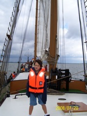

Tessellations
Tessellation- or tiling of the plane is a collection of plane figures that fills the plane with no overlaps and no gaps. One may also speak of tessellations of the parts of the plane or of other surfaces.
There are 5 methods I know from tessellations.org. M. C. Escher is an amazing person who made illusions, tessellations, and much, much, more!
The 5 methods are the paper cut, slice, gap, line, and multi method.
1. slice- Start with a shape known to
tessellate. Then cut out a shape on one
side then tape it to any side and use it as
a tracer.
2. paper cut-First, draw 2 random lines on a square. Next, cut your shape out and erase all the lines. Then, put all the corners together and tape it. Then trace it!
-
3.gap- First, draw a graphic . Next, fill the page with a drawing and make sure to leave a gap in between your drawings and I think you should use a tracer. Now, you figure out what the gap looks like and color it any way you like if it is realistic or not!
4. line- First, draw a very wavy line. Next, rotate it 60 degrees and then you have 2 sides of a triangle. Then, draw a straight line joining the 2 wavy lines. Now draw a wavy line to the center of the straight line. Then, rotate the wavy line you just drew 180 degrees. Finally, figure out what it is and trace it!
-
5.multi- First, you start with a shape known to tessellate. Next, figure out what your shape could be. Then, trace and color.
MY FAVORITE
M. C. ESCHER
TESSELLATION
This is Brahms:Sonata #1 for Cello and this is me on my 3/4 size cello!
(it’s not me playing)
made by Thomas Steinholz started November 22nd 2009 (11/22/09)
finished November 26th 2009 (11/26/09)

Go
Tessellations!